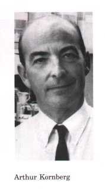
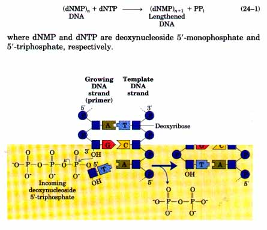
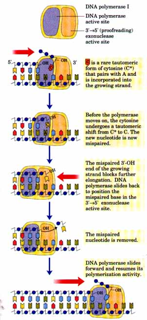
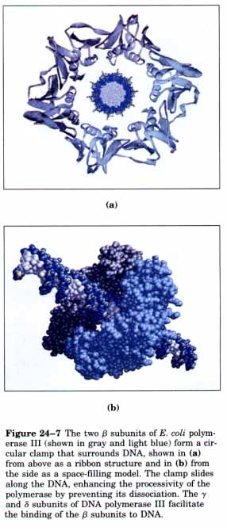
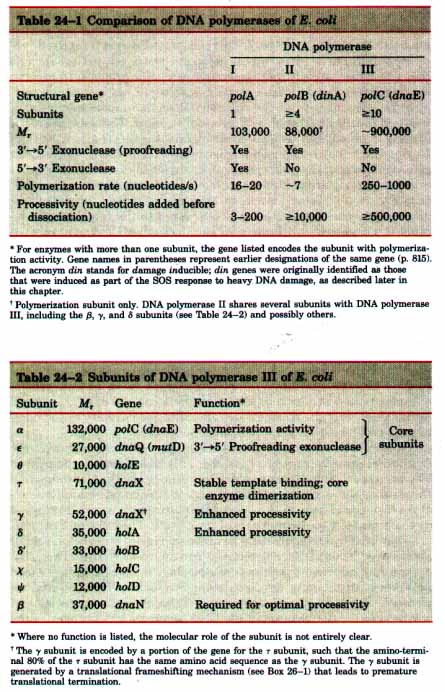
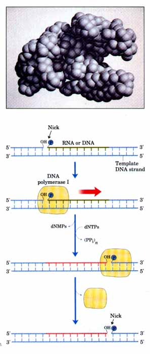

The search for an enzyme that could synthesize DNA was initiated in 1955 by Arthur Kornberg and colleagues. This work led to the purification and characterization of DNA polymerase from E. coli cells, a single-polypeptide enzyme now called DNA polymerase I (Mr 103,000). Much later, it was found that E. coli contains at least two other distinct DNA polymerases, which will be described below.
Detailed studies of DNA polymerase I revealed features of the DNA synthetic process that have proven to be common to all DNA polymerases. The fundamental reaction is a nucleophilic attack by the 3'-hydroxyl group of the nucleotide at the 3' end of the growing strand on the 5'-α-phosphorus of the incoming deoxynucleoside 5'-triphosphate (Fig. 24-5). Inorganic pyrophosphate is released in the reaction. The general reaction equation is
 |
Figure 24-5 Elongation of a DNA chain. A single unpaired strand is required to act as template, and a primer strand is needed to provide a free 3' end to which new nucleotide units are added. Each incoming nucleotide is selected by virtue of base pairing to the appropriate nucleotide in the template strand. |
Early work on DNA polymerase I led to the definition of two central requirements for DNA polymerization. First, all DNA polymerases require a template (Fig. 24-5). The polymerization reaction is guided by a template DNA strand according to the base-pairing rules predicted by Watson and Crick: where a guanine is present in the template, a cytosine is added to the new strand, and so on. This was a particularly important discovery, not only because it provided a chemical basis for semiconservative DNA replication, but because it represented the first example of the use of a template to guide a biosynthetic reaction. Second, a primer is required. A primer is a segment of new strand (complementary to the template) with a 3'-hydroxyl group to which nucleotides can be added. The 3' end of the primer is called the primer terminus. In other words, part of the new strand must already be in place; the polymerase can only add nucleotides to a preexisting strand. This has proven to be the case for all DNA polymerases,and this discovery provided an interesting wrinkle in the DNA replication story. No DNA-synthesizing enzyme can initiate synthesis of a new DNA strand. As we will see later in this chapter, enzymes that synthesize RNA do have the capability of initiating synthesis, and as a consequence, primers are often oligonucleotides of RNA.
After a nucleotide is added to a growing DNA strand, the DNA polymerase must either dissociate or move along the template and add another nucleotide. Dissociation and reassociation of the polymerase can limit the overall reaction rate, thus the rate generally increases if a polymerase adds additional nucleotides without dissociating from the template. The number of nucleotides added, on average, before a polymerase dissociates is defined as its processivity. DNA polymerases vary greatly in processivity, with some adding just a few nucleotides and others adding many thousands before dissociation occurs.
Throughout this book we have emphasized the importance of noncovalent as well as covalent interactions in biochemical processes. A discussion of the energetics of the polymerization reaction can be deceptive if only the covalent bonds are considered. The rearrangement of covalent bonds is straightforward: one phosphoric anhydride bond (in the dNTP) is hydrolyzed and one phosphodiester bond (in the DNA) is formed. This results in a slightly positive (unfavorable) change in standard free energy (ΔG°'≈ 2 kJ/mol) for the overall reaction shown in Equation 24-l. Hydrolysis of the pyrophosphate to two molecules of inorganic phosphate by the pyrophosphatases present in all cells yields a ΔG°' of -30 kJ/mol, and by coupling these two reactions the cell can provide a strong thermodynamic pull in the direction of polymerization, with a net ΔG°' of -28 kJ/mol. This is important to the cell, but in this case it is not the whole story. If this calculation were complete, polymerases would tend to catalyze DNA degradation in the absence of pyrophosphate hydrolysis. Purified DNA polymerases, however, carry out polymerization very efiiciently in vitro in the absence of pyrophosphatases. The explanation of this seeming paradox now is clear: noncovalent interactions not considered in the calculation above make an important thermodynamic contribution to the polymerization reaction. Every new nucleotide added to the growing chain is held there not just by the new phosphodiester bond but also by hydrogen bonds to its partner in the template and base-stacking interactions with the adjacent nucleotide in the same chain (p. 330). The additional energy released by these multiple weak interactions helps drive the reaction in the direction of polymerization.
Replication must proceed with a very high degree of fidelity. In E. coli, a mistake is made only once for every 109 to 1010nucleotides added. For the E. colL chromosome of about 4.7 x 106 base pairs, this means that an error will be made only once per 1,000 to 10,000 replications. During polymerization, discrimination between correct and incorrect nucleotides relies upon the hydrogen bonds that specify the correct pairing between complementary bases. Incorrect bases will not form the correct hydrogen bonds and can be rejected before the phosphodiester bond is formed. The accuracy of the polymerization reaction itself,however, is insufficient to account for the high degree of fidelity in replication. Careful measurements in vitro have shown that DNA polymerases insert one incorrect nucleotide for every 104 to 105 correct ones. These mistakes sometimes occur because a base is briefly in an unusual tautomeric form (see Fig. 12-9), allowing it to hydrogen-bond with an incorrect partner. The error rate is reduced further in vivo by additional enzymatic mechanisms.
One mechanism intrinsic to virtually all DNA polymerases is a separate 3'→5' exonuclease activity that serves to double-check each nucleotide after it is added. This nuclease activity permits the enzyme to remove a nucleotidejust added and is highly specific for mismatched base pairs (Fig. 24-6). If the wrong nucleotide has been added, translocation of the polymerase to the position where the next nucleotide is to be added is inhibited. The 3'→5' exonuclease activity removes the mispaired nucleotide, and the polymerase begins again. This activity, called proofreading, is not simply the reverse of the polymerization reaction, because pyrophosphate is not involved. The polymerizing and proofreading activities of a DNA polymerase can be measured separately. Such measurements have shown that proofreading improves the inherent accuracy of the polymerization reaction by 10z- to 103-fold. The discrimination between correct and incorrect bases during proofreading depends on the same base-pairing interactions that are used during polymerization. This strategy of enhancing fidelity by using complementary noncovalent interactions for discrimination twice in successive steps is common in the synthesis of informationcontaining molecules. A similar strategy is used to ensure the fidelity of protein synthesis (Chapter 26). Overall, a DNA polymerase makes about one error for every 106 to 108 bases added. The measured accuracy of replication in E. coli cells, however, is still higher. The remaining degree of accuracy is accounted for by a separate enzyme system that repairs mismatched base pairs remaining after replication. This process, called mismatch repair, is described with other DNA repair processes later in this chapter. |
 Figure 24-6 An example of error correction by the 3'→5' exonuclease activity of DNA polymerase I. Structural analysis has located the exonuclease activity ahead of the polymerization activity as the enzyme is oriented in its movement along the DNA. A mismatched base (here, a C-A mismatch) impedes translocation of the enzyme to the next site. Sliding backward, the enzyme corrects the mistake with its 3'→5' exonuclease activity, then resumes its polymerase activity in the 5'→3' direction. |
| More than 90% of the DNA polymerase
activity in E. coli extracts can be accounted for by DNA
polymerase I. Nevertheless, almost immediately after the
isolation of this enzyme in 1955, evidence began to
accumulate that it is not suited for replication of the
large E. coli chromosome. First, the rate at which
nucleotides are added by this enzyme (600
nucleotides/min) is too slow, by a factor of 20 or more,
to account for observed ratea of fork movement in the
bacterial cell. Second, DNA polymerase I has a relatively
low processivity; only about 50 nucleotides are added
before the enzyme dissociates. Third, genetic studies
have shown that many genes, and therefore many proteins,
are involved in replication: DNA polymerase I clearly
does not act alone. Finally, and most important, in 1969
John Cairns isolated a bacterial strain in which the gene
for DNA polymerase I was altered, inactivating the
enzyme. This strain was nevertheless viable! A search for other DNA polymerases led to the discovery of E. coli DNA polymerase II and DNA polymerase III in the early 1970s. DNA polymerase II appears to have a highly specialized DNA repair function (described later in this chapter). DNA polymerase III is the primary replication enzyme in E. coli. Properties of the three DNA polymerases are compared in Table 24-l. DNA polymerase III is a much more complex enzyme than polymerase I. It is a multimeric enzyme with at least ten different subunits (Table 24-2). Notably, the palymerization and proofreading activities of DNA polymerase III are located in separate subunits. The β subunit of this complex enzyme has been crystallized. Its structure is depicted in Fig. 24-7. |
 |

DNA polymerase I is far from irrelevant,
however. This enzyme serves a host of
"clean-up" functions during replication,
recombination, and repair, as discussed later in the
chapter. These special functions are enhanced by an
additional enzymatic activity of DNA polymerase I, a
5'→3' exonuclease activity. This activity is distinct
from the 3'→5' proofreading exonuclease and is located in
a distinct structural domain that can be separated from
the enzyme by mild protease treatment. When the 5'→3'
exonuclease domain is removed, the remaining fragment (Mr
68,000) retains the polymerization and proofreading
activities, and is called the large or Klenow fragment.
The structure of the HIenow fragment has been determined,
and it is this fragment of DNA polymerase I that is
depicted in Figure 24-8. The 5'→3' exonuclease activity
of intact DNA polymerase I permits it to extend DNA
strands even if the template is already paired to an
existing strand of nucleic acid (Fig. 24-9). Using this
activity, DNA polymerase I can degrade or displace a
segment of DNA (or RNA) paired to the template and
replace it with newly synthesized DNA. Most other DNA
polymerases, including DNA polymerase III, lack a 5'→3'
exonuclease activity site for DNA.DNA Replication Requires Many Enzymes and Protein FactorsWe now know that replication in E. coli requires not just a single DNA polymerase but 20 or more different enzymes and proteins, each performing a specific task. Although not yet obtained as a physical entity, the entire complex has been called the DNA replicase system or the replisome. The enzymatic complexity of replication reflects the requirements imposed on the process by the structure of DNA. We will introduce some of the major classes of replication enzymes by considering the problems that they overcome. To gain access to the DNA strands that are to act as templates the two parent strands must be separated. This is generally accomplished by enzymes called helicases, which move along the DNA and separate the strands using chemical energy from ATP. Strand separation creates topological stress in the helical DNA structure, which is relieved by the action of topoisomerases (Chapter 23). The separated strands are stabilized by DNA-binding proteins. Primers must be present or synthesized before DNA polymerases can synthesize DNA. The primers are generally short segments of RNA laid down by enzymes called primases. Ultimately, the RNA primers must be removed and replaced by DNA. In E. coli, this is one of the many functions of DNA polymerase I. After removal of the RNA segments and filling in of the gap with DNA, there remain points in the DNA backbone where a phosphodiester bond is broken. These breaks, called nicks, must be sealed by enzymes called DNA ligases. All of these processes must be coordinated and regulated. The interplay of these and other enzymes has been best characterized in the E. coli system. |
Figure 24-8 The HIenow fragment of E. coli DNA polymerase I, produced by proteolytic treatment of the polymerase, includes the polymerization activity of the enzyme. The horizontal groove evident on this face of the protein is the likely binding site for DNA.  Figure 24-9 The 5'→3' exonuclease of DNA polymerase I can remove or degrade an RNA or DNA strand paired to the template, as the polymerase activity simultaneously replaces the degraded strand. These activities are important for the role of DNA polymerase I in DNA repair and in removal of RNA primers during replication, as described later in this chapter. The strand of nucleic acid {DNA or RNA) to be removed is shown in green; the replacement strand is shown in red. A nick (a phosphodiester bond broken to leave a free 3' OH and 5' phosphate) is found where DNA synthesis starts. After synthesis, a nick remains where DNA polymerase I dissociates. This action of polymerase I has effectively extended the nontemplate DNA strand and moved the nick down the DNA, a process that is sometimes called nick translation. |